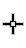
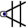
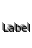
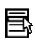

Preferences File
A Chimera preferences file contains settings from the
Preferences dialog and additional information
such as recently accessed files and directories.
A particular preferences file can be specified
with --preferences
at startup. Otherwise,
Chimera will look for a file named preferences
first in the current directory,
then in a .chimera subdirectory of the current directory, then
in the .chimera subdirectory of the user's home directory.
On Windows, what is considered the home directory in this context
depends on a user's profile, but is often
C:\Documents and Settings\username\Application Data\.
The file location is reported in the
Preferences preferences.
Preference changes and other information from the current session
will be saved to this file unless it has been designated
read-only.
This system allows a user to maintain a single set of preferences
for all Chimera sessions, or different preferences specific to data in
different directories, or a combination of these.
If no preferences file is found,
Chimera will look for a writable location for a new preferences file
in the following order: the user's home directory
(a subdirectory .chimera with a preferences file within it
will be created), a subdirectory .chimera of the current directory,
the current directory. If none of these directories are writable,
an error message will appear.
Preferences Dialog
Choosing Favorites... Preferences from the menu opens the
Preferences dialog.
Options within are grouped by Category:
For just the category being shown:
Reset replaces the current settings with the original defaults,
Restore replaces the current settings with
those previously saved in the
preferences file,
and Save saves the current settings to the
preferences file.
Equivalent operations can be performed for
all categories at once
in the Preferences section
of the Preferences dialog.
Help opens this manual page in a browser window, and
Close dismisses the Preferences dialog.
Default settings are indicated below in bold.
Background
The Background section of the
Preferences dialog includes:
- Background color (a
color well, No Color by default)
- when set to No Color, the background is black
- Label font (Sans Serif/Serif/Fixed)
(Normal/Bold/Italic/Bold Italic) (6/8/9/10/11/12/16/18/24/30/36)
- Selection highlight method (outline/fill) - how
a selection is highlighted in the graphics window
- Selection highlight color (a
color well, green by default) -
what color to use for highlighting a selection
in the graphics window
Command Line
The Command Line section of the
Preferences dialog is only available after the
Command Line has been shown.
Fetch
The Fetch section of the
Preferences dialog controls handling of data
retrieved over the Web from various databases. See also:
PDB preferences
- Save fetched files (true/false)
- whether to save fetched files locally; even if this option is true,
no files will be saved unless a download directory has also been specified
- Use local files (true/false)
- whether to look in the download directory and use a previously fetched
copy (if any) when Fetch by ID or
the open command is used
to open a file from a database
- Download directory
- where to store fetched files locally; subdirectories for the different
databases will be created as needed
General
The General section of the
Preferences dialog includes:
- Confirm exit (true/false) - whether to ask for
confirmation before exiting Chimera when File... Quit has been chosen
or the command stop has been entered
(does not apply to occurrences of stop
in command files)
- Show balloon help (true/false) - whether to show
balloon help,
explanatory text that pops up when the cursor is left in certain positions
- Show atomspec balloon
(true/false) - whether to show information in a balloon
when the cursor is paused over an object (atom, bond, surface, etc.)
in the graphics window.
The number of decimal places shown for bond distances can be set with the
Distances tool.
- Atomspec display style
(simple/command-line specifier/serial number) - how to
describe atoms in atomspec balloons and
the
Structure Measurements dialog.
Atom naming styles:
- simple - residue name, residue specifier, and atom name
(for example, HIS 16.A ND1)
- command-line specifier - a
specification string that could be
used in the Command Line
(for example, :16.A@ND1)
- serial number - atom serial number (for example, 126)
Model number (for example, #0)
will also be included when multiple models are present.
- File lists path style (file - leading path/full path) -
how to list files and their locations in certain dialogs (such as
Files to read at startup within the
Command Line preferences);
a change will not be evident until after Chimera is restarted
- Fullscreen graphics (true/false) - whether the graphics
window is in fullscreen mode
(Windows only)
- Toolbar side (left/right/top/bottom) - position of the
toolbar relative to the graphics window
(the toolbar is only shown when it contains one or more icons, as specified
in the Tools section)
- File browser confirms overwrite (true/false)
- whether to ask for confirmation before overwriting a file with
a save dialog
- Use short open/save browser (true/false) - whether
open/save dialogs
should show only the two lowest directory levels
(more details)
- Open dialog starts in directory from last session
(true/false) - whether the first
open/save dialog invoked during a session should start in the directory
where a file was last opened or saved in the previous session, or in the
current working directory. The default is true on
Windows systems, false on the others.
- Debug OpenGL on startup (true/false) - whether to open
Debug Graphics
Driver at startup to selectively enable/disable OpenGL
features before starting Chimera.
This should be used only to find workarounds for
graphics driver bugs,
because in the absence of such problems, changing the settings from the
system defaults is expected to degrade Chimera performance and/or appearance.
Debug Graphics
Driver can also be called with the startup option
--debug-opengl.
- Update check interval
(never/daily/weekly/biweekly/monthly/quarterly)
- how often to check whether a newer version of Chimera
(snapshot or production release) is available
- Initial window size
(remember last/fixed)
- how to determine the size of the window at startup
- Fixed size - pixel width and height for fixed
initial window size
In the Mac Aqua version of Chimera only:
- Menus in windows on Mac (true/false)
- whether to show Chimera menus in-window as well as across the top
of the screen
Image Credits
The Image Credits section of the
Preferences dialog specifies information to be included
in saved image files (TIFF, PNG).
This information does not affect the image itself.
- Artist (user's login name by default) - optional, name of the
image creator
- Copyright (blank by default) - optional, a copyright statement
Messages
The Messages section of the
Preferences dialog controls the disposition of
command, status, warning, and error messages.
- Show status line (true/false) - whether to show a
line for status messages
under the main Chimera window (otherwise, status messages are not visible);
can also be set from the
Accelerators dialog
- Clear status line after (5 seconds/10 seconds/20 seconds/30
seconds/1 minute/never) - how long a status message will be shown in
the status line (when not overwritten by subsequent status messages);
applies to status messages appearing in certain dialogs as well as
the main Chimera status line
- Command (reply log only/dialog) - whether command messages
should appear in the Reply Log
only, or also generate a dialog box
- Warning (reply log only/dialog) - whether warnings
should appear in the Reply Log
only, or also generate a dialog box
- Error (reply log only/dialog) - whether error messages
should appear in the Reply Log
only, or also generate a dialog box
Mouse
Mouse button functions
including the manipulation of models
can be reassigned using the Mouse section
of the Preferences dialog.
Functions may be assigned to the left, middle, and right mouse
buttons alone and and in combination with the Ctrl key.
There can be no more than one function checked per row
(per button or Ctrl-button).
Mice with fewer than three buttons
can be accommodated.
| icon | meaning |
default assignment | |
icon | meaning |
default assignment |
|
rotation |
1
(left button) | |
 |
picking
(selection from screen) |
Ctrl-1 |
|
XY-translation |
2
(middle button) | |
|
Z-translation |
Ctrl-2 |
|  |
scaling |
3
(right button) | |
 |
label-dragging
(XY, +Shift for Z) |
Ctrl-3 |
|  |
pop-up
Chimera menu |
(none)
see alternatives | |
|
|
|
Continue rotation after mousing (true/false) indicates whether
rotation should continue when the corresponding mouse button is released
while the cursor is in motion.
Some tools create additional mouse modes represented by different icons,
for example:
New Molecules
The New Molecules section of the
Preferences dialog controls how newly opened molecules
will initially appear.
New Molecules settings can be circumvented by opening structures
with the command open noprefs;
this prevents inconsistent behavior of
command files and
demos
potentially caused by the different preferences settings of different users.
See also: molecule model attributes,
presets
-
use new color for each model (true/false) -
set the model-level color
(see coloring hierarchy)
differently for each new molecule model;
submodels with
the same main model number will be assigned the same model-level color.
This preference can also be controlled with
set/~set autocolor.
- otherwise, use color (a
color well, by default showing
a light gray color) -
color at the model level, see coloring hierarchy
- smart initial display (true/false) -
show newly opened molecule models with settings similar to the
ribbons preset,
but without rainbow-coloring chains or altering global parameters
such as background color.
Smart initial display
overrides other New Molecules preferences except for those affecting
initial model color, line width, stick scale, ball scale,
metal complexes, and Mol2 model naming.
- ribbon display (off/on)
- whether to show ribbon;
ribbons are only drawn for proteins and nucleic acids.
Protein helix and strand assignments are taken from the input structure
file or generated with ksdssp.
- ribbon cross section (edged/flat/rounded/any additional
styles
created and named with the
Ribbon
Style Editor) - ribbon
style
(see also ribrepr)
- ribbon scaling (Chimera default/licorice/any additional
scalings
created and named with the
Ribbon
Style Editor)
- ribbon
scaling
(see also ribscale)
- ribbon hides backbone atoms (true/false) -
whether showing ribbon for residues within the model hides
backbone atoms for those residues (see the command
ribbackbone for details)
- line width (1.0 by default)
- pixel width of lines depicting bonds (when in the wire draw mode)
- atom style (dot/ball/endcap/sphere) - atom
draw mode
(excluding monatomic ions)
- bond style (wire/stick) - bond
draw mode
- monatomic ion style
(dot/ball/endcap/sphere) - draw mode
to use for monatomic ions
- stick scale (1.0 by default)
- scale factor for bonds in the stick
draw mode.
The stick scale is multiplied by individual bond radii (default
0.2 angstroms) to generate stick radii in angstroms.
Changing stick scale is preferable to changing all of the bond radii
in a model, because the former will also scale singleton atoms in the
endcap draw mode appropriately. Either way,
the other endcap atoms (those participating in bonds) will be scaled
to match the thickest of the attached bonds.
- ball scale (0.25 by default)
- scale factor for atoms in the ball
draw mode.
The ball scale is multiplied by individual atom
VDW radii to generate ball radii in angstroms.
- per-atom coloring (none/by element/by heteroatom)
- whether to leave atom colors unassigned (none;
atoms will inherit model colors)
or to assign element colors
to all atoms (by element) or only the non-carbon atoms
(by heteroatom)
- auto-chaining (off/on)
- whether to connect atoms that precede and follow undisplayed segments
(whether to draw pseudobonds between them)
- metal complex line width (2.0 by default)
- pixel width of pseudobonds
depicting metal coordination (when in the wire
draw mode)
- metal complex color (a
color well, medium purple
by default) - color to use for pseudobonds
depicting metal coordination
- dash metal complex lines (true/false)
- whether the pseudobonds depicting
metal coordination should be shown as dashed (rather than solid) lines
when in the wire draw mode
- Mol2 model naming
(file name/Mol2 molecule name/Mol2 molecule comment) -
how to name models read from Mol2 format: by file name, by molecule name
given within the file (on the line below @<TRIPOS>MOLECULE), or
by comment text (the sixth line below @<TRIPOS>MOLECULE)
New Surfaces
The New Surfaces section of the
Preferences dialog sets parameters for newly created
molecular surfaces.
See also: molecular surface attributes,
presets
- representation
(solid/mesh/dots) - display type
- probe radius (1.4) - radius
in Å of the probe sphere used to compute the surface. A larger probe
decreases surface bumpiness because it fits into fewer crevices.
A radius of 1.4 Å is commonly used to approximate a water molecule.
- vertex density (2.0) - vertices per Å2.
Greater density results in a smoother surface but
increases computational demands for calculating and moving the surface.
- line width (1.0) - pixel width of lines used in the mesh
surface representation
- dot size (1.0) - pixel size of dots used in the dot
surface representation
- show disjoint surfaces (true/false)
- whether to check for multiple disconnected parts of a surface
(components)
rather than assuming there is only one; increases calculation time
PDB
The PDB section of the
Preferences dialog includes:
POV-Ray Options
The POV-Ray Options section of the
Preferences dialog sets specifications for
raytracing with POV-Ray.
- POV-Ray executable [ location ]
- the location of the POV-Ray executable. This is filled in automatically
for the executable included with Chimera, but another location
could be specified.
- Show preview (true/false) - whether to show a preview;
regardless of this setting, however, a preview will not be shown
during movie recording or
when Chimera is in nogui mode.
- Quality (default 9, range 0-11)
- output image quality, adjusted by omitting calculations that are normally
performed. For example, values < 4 yield images without shadows
[quality details at the POV-Ray site].
- Antialias (true/false)
- whether multiple samples should be averaged to produce a single output pixel;
otherwise, POV-Ray will simply trace one ray per pixel.
Analogous to (but independent of)
Chimera image supersampling,
this supersampling in POV-Ray smooths edges in output images
[antialias details at the POV-Ray site].
- Antialias method
(fixed/recursive) - how pixels should be supersampled when
antialiasing is used.
In the fixed method, POV-Ray initially traces one ray per pixel.
Each pixel is compared to its neighbors to the left and above.
If the colors of two pixels differ by more than the
antialias threshold, each of the pixels
will be subsampled according to the antialias depth
(if the depth is 3, a grid of 3*3=9 samples will be taken per output pixel).
In the recursive method, POV-Ray initially traces 4 rays at the corners
of each pixel. Where the colors of adjacent samples differ by more than the
threshold, subsamples will be taken and compared.
This process is repeated until adjacent colors agree within the threshold,
or the maximum number of subdivision cycles
(the specified antialias depth) has been performed.
- Antialias depth (default 3, range 1-9)
- meaning depends on which antialias method is used
- Antialias threshold
(default 1.0, range 0.0-3.0)
- two colors are compared by summing the
absolute differences in their red, green, and blue components;
differences greater than the threshold trigger further sampling
when antialiasing is used.
Lower threshold values increase the number of samples and the calculation time,
whereas a threshold of 3.0 will suppress further sampling.
- Jitter (true/false)
- whether to introduce noise by randomly wiggling the supersample locations
when antialiasing is used; not recommended for
movie recording, as the random noise
will make pixels vary and flicker from frame to frame
[jitter details at the POV-Ray site]
- Jitter amount (default 0.5)
- values are specified relative to 1.0, which is
the most jitter that can be performed
while retaining supersamples within the original pixel
- Transparent background
(true/false/same as chimera)
- whether to make the background transparent by including transparency
(alpha) values for output pixels
[output alpha details at the POV-Ray site].
The same as chimera option means to follow the current
transparent background
setting in the Effects tool.
It is also necessary to turn off
depth-cueing
to obtain background transparency in raytraced images.
- Wait for POV-Ray to finish (true/false)
- whether to prevent further commands from executing until
POV-Ray has finished generating the image.
During movie recording,
the behavior will always be as if this were set to true.
- Keep POV-Ray input files (true/false)
- whether the POV-Ray input files containing the scene (*.pov) and raytracing
options (*.ini) should be kept or deleted after the image has been rendered
Preferences
The Preferences section of the
Preferences dialog includes:
- Preferences file - the location of the
preferences file for the current session
- Read-only - whether the
preferences file for the current session
should be treated as read-only.
The initial setting reflects the file permissions at Chimera startup.
When Read-only is false, Chimera may update the file
with changes in preference settings and other information;
switching to true prevents subsequent changes in the file.
When Read-only is true, Chimera will not update the file;
switching to false (if the file is already writable, or is owned
by the user) will enable its modification by Chimera.
- All categories:
Tools
The Tools section of the
Preferences dialog allows control over the following
Settings for each entry in the
Tools menu:
- Auto Start - whether to launch the tool automatically
upon Chimera startup
- On Toolbar - whether to show the tool's icon in the
toolbar
- In Favorites - whether to include the tool in the
Favorites menu
- Confirm on Start - whether to ask
for confirmation before starting the tool
The Locations section allows users to
specify additional directories in which Chimera should look
for tools. Directories can be added to or deleted from the list.
Web Access
The Web Access section of the
Preferences dialog includes:
- Confirm open of commands or code (once per session/each
time/never) - whether/how often to
ask for
confirmation before opening certain types of
data
linked to web pages.
- Accept web data (true/false) - whether the running
instance of Chimera can be used as a helper application for
data
linked to web pages (and can receive files specified with
chimera --send).
On Mac, this preference is not shown, but is effectively
true unless Chimera was started from the terminal command line.
A browser must be
configured
to send the files to Chimera.
If there is no running instance of Chimera enabled to accept web data,
another instance of Chimera will be started and used to open the data.
If there are multiple running instances of Chimera set to
accept web data, the file will be sent to the instance that
most recently had focus (was most recently clicked into).
- Use HTTP proxy (true/false) - whether to use
a proxy to connect to the internet through a firewall
(for example, to fetch a PDB file from the
Protein Data Bank web site);
the server and port number settings (below) should generally be the same as
those used for web browsers
- Proxy server - the hostname or IP address of the proxy server
- Proxy port - proxy port number to use
UCSF Computer Graphics Laboratory / November 2009